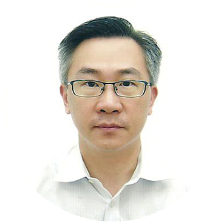

-
 王平韩投伙伴 董事简介：韩投伙伴是韩国投资控股(三星最大的机构股东)的全资子公司。作为唯一一位同一个月内带领两家企业成功登陆美股（纳斯达克、纽交所）的职业投资人，王平先生眼光独到、准确、视线宽广，所主投的企业成长性非常高，除却已经成功上市的众多项目，仍有多家投资的企业正在A股排队。王平先生拥有美国奥斯汀大学计算机科学学士学位、清华－MIT 国际MBA学位，有9年风险投资管理经验，主要关注领域包括先进制造业行业（生物能源、生物制药、环保、新能源）、TMT。
王平韩投伙伴 董事简介：韩投伙伴是韩国投资控股(三星最大的机构股东)的全资子公司。作为唯一一位同一个月内带领两家企业成功登陆美股（纳斯达克、纽交所）的职业投资人，王平先生眼光独到、准确、视线宽广，所主投的企业成长性非常高，除却已经成功上市的众多项目，仍有多家投资的企业正在A股排队。王平先生拥有美国奥斯汀大学计算机科学学士学位、清华－MIT 国际MBA学位，有9年风险投资管理经验，主要关注领域包括先进制造业行业（生物能源、生物制药、环保、新能源）、TMT。 -
李健首都科技集团 董事长简介：北京首都科技集团有限责任公司（以下简称“首都科技集团”）是北京市人民政府为发挥首都众多高校、科研院所的科技优势，促进首都科技与国际、国内企业及金融资本结合，推动我国新兴科技产业发展而建立的科技集团，北京大学、清华大学、中科院、中国医学科学院等三十余家中央在京科研（设计）院所、高等学校都是股东单位。首都科技集团自成立以来一直致力于在京中央院所科技成果产业化和转化的工作。2011年起，根据北京市政府的部署，北京市财政在5年内统筹安排资金300亿，以促进北京市重大科技成果转化和产业化，首都科技集团与中关村发展集团、北京投资公司等五家国企共同作为北京市重大科技成果转化与产业化专项资金的股权投资专业管理机构。
-
李春义长江国弘 创始合伙人简介：上海长江国弘投资管理有限公司是一家专注于成长期和扩张期企业股权投资的投资管理机构。公司有多家投资企业成功在国内主板、中小板和创业板上市，或通过并购退出。代表案例包括豫金刚石、双环传动、海南橡胶等。 李春义先生1993年起进入金融投资行业，参与了多家大型企业的改制和管理咨询工作，且有成功的创业经历。曾任农业银行湖北信托投资公司上海证券业务部总经理，上海睿信投资管理有限公司总经理、副董事长，深圳中欧创业投资管理有限公司总经理，凯石长江投资管理有限公司总经理等职。参与发起设立了中国本土第二支有限合伙制私募股权投资基金——深圳中欧创投基金。先后主导了对步长制药、豫金刚石、郑煤机等知名企业的股权投资和投后管理。
-
 李泓辉维思资本 合伙人简介：维思资本是国内领先的私募股权投资基金，精准专业务实，注重投资质量远大过于注重投资数量，不跟风投资、不分散业务线，核心团队是中国最早从事美元直接投资的管理团队之一，并获得优异业绩，团队是无锡尚德、江西赛维最早的投资机构，目前已成功募集并管理人民币直投基金。李泓辉先生有超过18年的股权投资和运营经验，于2007年加入法国NPEA亚洲投资基金，之前曾在三菱商事，华欧国际等担任高管负责投资业务。李先生拥有中欧国际工商学院MBA学位，杭州电子科技大学本科学位。主要关注清洁，文化等领域投资。
李泓辉维思资本 合伙人简介：维思资本是国内领先的私募股权投资基金，精准专业务实，注重投资质量远大过于注重投资数量，不跟风投资、不分散业务线，核心团队是中国最早从事美元直接投资的管理团队之一，并获得优异业绩，团队是无锡尚德、江西赛维最早的投资机构，目前已成功募集并管理人民币直投基金。李泓辉先生有超过18年的股权投资和运营经验，于2007年加入法国NPEA亚洲投资基金，之前曾在三菱商事，华欧国际等担任高管负责投资业务。李先生拥有中欧国际工商学院MBA学位，杭州电子科技大学本科学位。主要关注清洁，文化等领域投资。 -
张振远欧源资本 合伙人简介：欧源资本是活跃在中国PE市场上的成功投资机构之一，专注于私募股权投资基金的管理，总部位于上海。张振远先生投资的的企业包括宝钢包装、天禄能源、徕木电子等。张振远先生是上海欧源资本管理有限公司合伙人，中欧工商管理学院工商管理硕士，曾先后在嘉实基金、友邦华泰、富达基金分别担任业务部（机构部）总经理和联席董事。张先生拥有10年行业投资和风险投资管理经验，主要关注领域：先进制造业（医疗器械、环保、新材料）。
-
顾旋成为资本 合伙人简介：成为资本，是立足于支持创业者和企业家，并帮助他们实现企业价值的实业投资基金，不是金融投资者，投资案例包括优酷土豆，舜宇光学等。顾旋先生现担任成为资本合伙人，专注于大数据、云计算、企业服务的投资机会。顾旋拥有美国密苏里州立大学理学学士学位，以及宾夕法尼亚大学沃顿商学院研究员称号。顾旋曾担任SAP大中国区服务事业部总经理，主要负责推动SAP咨询服务、增值运维服务, 客户订制开发以及教育培训服务在大中国地区的发展，帮助客户充分借助SAP服务组合，确保其在应用软件生命周期内实现价值最大化。顾旋在商务服务（咨询、信息技术外包、业务流程外包等）、管理、销售、业务拓展及并购方面，拥有超过19年的丰富经验和卓越成就。
-
商思林洪泰基金 合伙人简介：洪泰基金是著名教育学家俞敏洪与资深投行人士盛希泰共同成立的基金，背后的出资人堪称“豪华阵容”，包括中坤投资董事长黄怒波、老牛基金会创始人牛根生、华谊兄弟董事长王中军等商界大佬。商思林拥有13年主流财经商业媒体从业经验，曾担任《财经天下》杂志联合创始人、执行主编，在主流财经和商业领域拥有广泛而深入的积累。在加入洪泰基金之前，商思林曾创立虫洞创业之家。
-
杜朋中关村产业联盟 副理事长启迪控股 副总裁简介：中关村产业技术联盟促进会是国家科技创新总体战略中的重要组成部分，也是中关村的一大特色，在中国乃至全世界都是唯一的。联盟促进会，这种新型组织形式在促进联盟间协同创新，技术、产业交叉集成中发挥了积极作用，同时已在搭建公共服务平台、推动产业技术升级、搭建政介沟通桥梁等发面发挥了重要作用；通过举办联盟主题会、项目论证会等方式搭建交流平台，完成了资源与资源的碰撞，成功促成了不少案例。。
-
俞振华中关村储能产业联盟 理事长简介：中关村储能产业技术联盟是中国最早专注于储能领域的非营利性社团组织，致力于通过推动中国政府政策的制定和储能技术在电力系统的应用促进储能产业的发展。联盟聚集了当前优秀的储能技术公司、新能源产业公司以及相关领域的科研院所和高校，覆盖了从发电，输电，配电，新能源并网以及13类主流储能技术厂商的成员。目前在联盟运营的基础上已经形成了产业研究平台、信息交流平台、金融服务平台、关键技术研发平台、以及公共技术服务平台，能够有效的服务储能产业上下游产业链。。
-
岑淼聚丰投资 副总裁简介：聚丰投资从2008年开始进入资本投资领域，先后投资了数十家民营企业，预计今后每年以参股形式投资各类实体经济企业不少于10家。同时，公司长期涉足股票，形成初具规模的以二级市场、定向增发、量化对冲为核心的投资组合。岑淼先生，德国经济学硕士，曾担任九鼎投资高级投资经理、凤形股份董事，现任上海聚丰投资管理有限公司副总经理、上海大学生创业投资有限公司总经理、上海长江国弘投资管理有限公司董事等职务，具有丰富的股权投资经验，曾先后参与并主导了对凤形股份（002760）、明星电缆（603333）、正帆科技、杰傲生物医药、蓝色星球、琥崧智能等多家企业的股权投资和投后管理。